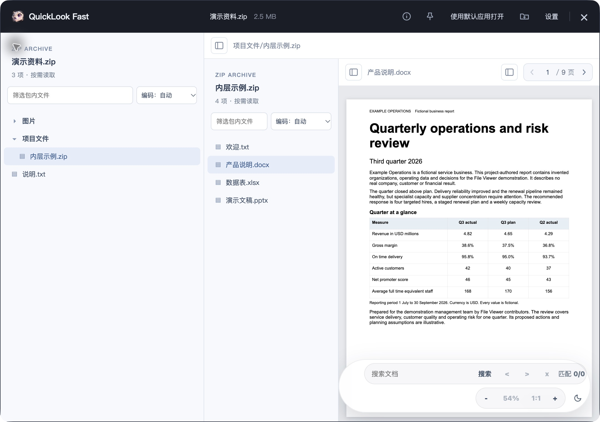

QuickLook Fast 1.0 · 图文预览
点击图片可查看原图
同一个预览习惯，三个系统
按空格查看文件夹；左侧浏览目录，右侧查看选中的内容。系统窗口样式和快捷键接入方式各有区别。


文件夹设置中可在文件夹和 ZIP/RAR 预览里隐藏 .DS_Store 和 __MACOSX；关闭开关后重新显示，文件本身不会被删除。
先看一眼压缩包里的内容
浏览 ZIP 或 RAR 的目录，选中里面的文件查看。ZIP 中还有 ZIP 时，也可以继续查看内层内容。常见密码文件会根据情况请求密码，具体支持取决于压缩方式和文件本身。

ZIP 里的 ZIP
外层压缩包 → 内层压缩包 → Word 文档
嵌套深度、条目大小和加密方式等存在限制，详见使用指南。
常用文件，先确认再打开
PPTX、Word、Excel、PDF、图片、音视频和代码等都接入了预览。部分专业格式提供内容、结构或元数据查看。


已接入 200 多个扩展名；不同文件的字体、公式、动画和复杂排版可能影响显示效果。查看完整格式清单
按你习惯的方式打开
Windows
使用已接入的资源管理器入口，选中文件后按空格预览。
macOS
可选择系统快速查看、Space 接管或组合键；Dock 和菜单栏图标可分别设置。
Linux
GNOME Files、Dolphin 和 Plasma 桌面使用不同接入方式；Dolphin 快捷键需要自行配置。
Dolphin 预览中暂不支持方向键跟随切换；Plasma 桌面接入是实验性功能。具体安装、权限、兼容性和恢复步骤见平台说明。